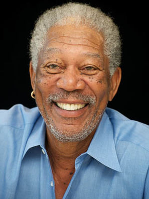
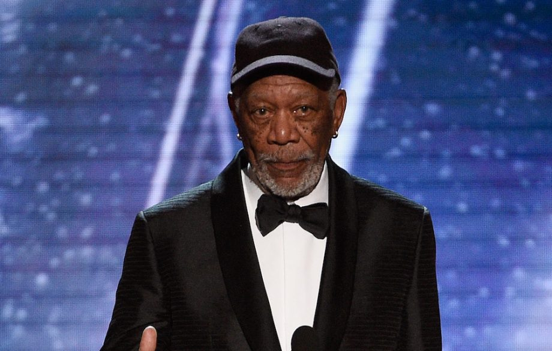
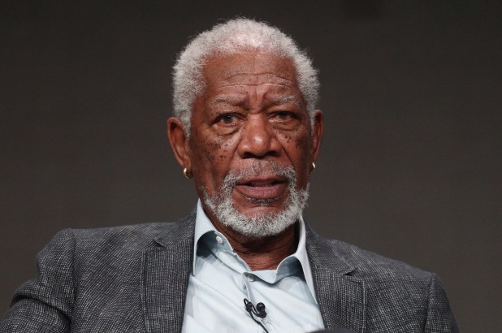

Morgan Freeman
Born: June 1, 1937
In: Memphis, Tennessee, USA
BIOGRAPHY
Morgan Freeman is an American actor and film narrator. Freeman won an Academy Award in 2005 for Best Supporting Actor with Million Dollar Baby (2004), and he has received Oscar nominations for his performances in Street Smart (1987), Driving Miss Daisy (1989), The Shawshank Redemption (1994), and Invictus (2009). He has also won a Golden Globe Award and a Screen Actors Guild Award. Freeman has appeared in many other box office hits, including Glory (1989), Robin Hood: Prince of Thieves (1991), Seven (1995), Deep Impact (1998), The Sum of All Fears (2002), Bruce Almighty (2003), The Dark Knight Trilogy (2005–2012), Wanted (2008), RED (2010), Now You See Me (2013), The Lego Movie (2014), and Lucy (2014). He rose to fame as part of the cast of the 1970s children's program The Electric Company. Noted for his deep voice, Freeman has served as a narrator, commentator, and voice actor for numerous programs, series and television shows.[5] He is ranked as the seventh-highest box office star since July 2019. He has a combined total box office gross of $4.57 billion, with an average of $71.5 million per film
IMAGES


.jpg)
Movies


DID YOU KNOW?
He was born to Mayme Edna and Morgan Freeman Sr. as one of their five children. His mother was a teacher and father, a barber. He was sent to live with his grandmother as an infant; he started living with his parents some years later. He loved movies and acting from a young age.